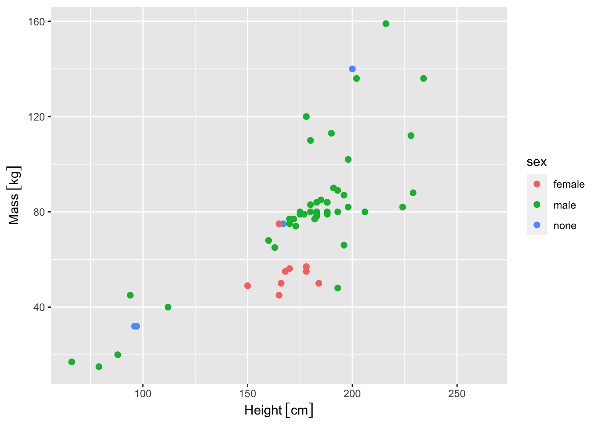
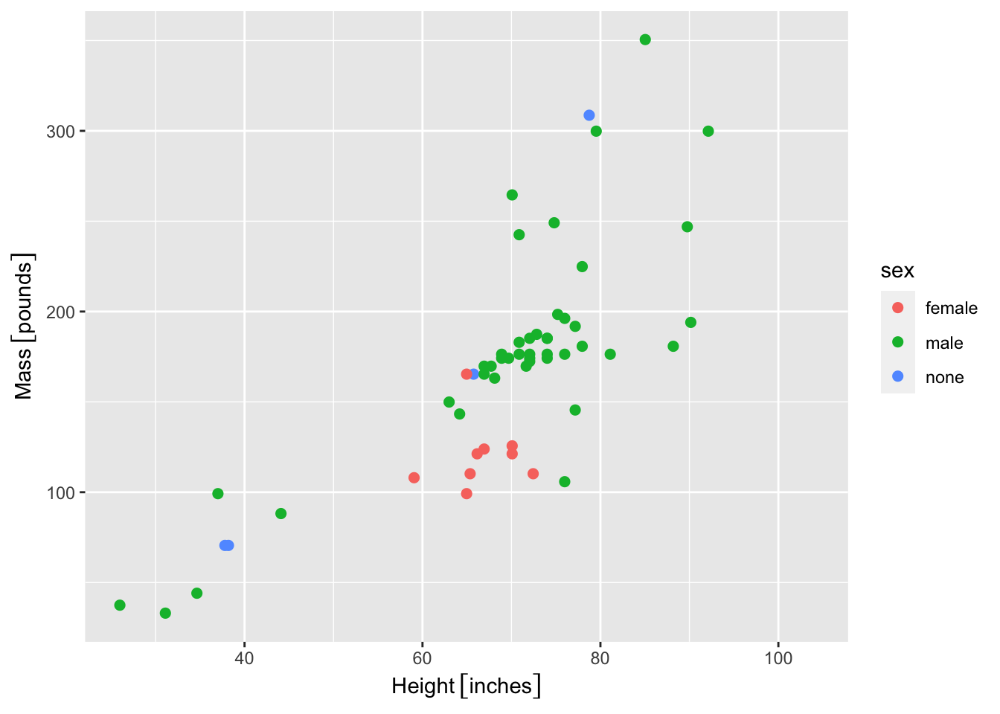
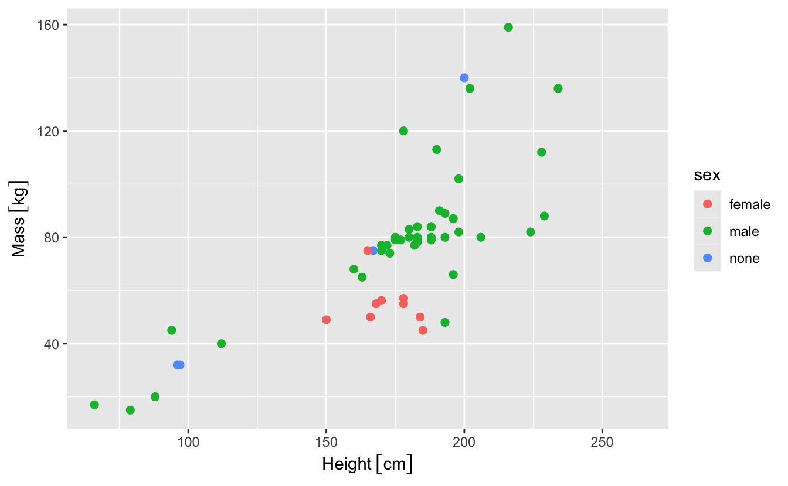

# Load the 'units' library
library(units)
t <- seq(0.1,1,length=3)
# attribute a unit, here 'seconds':
t <- set_units(t, "s")
tUnits: [s]
[1] 0.10 0.55 1.00It is easy to work with units in R thanks to the package units (see vignette).
Working with the units package can prove a very good idea to avoid conversion errors in your data treatment…
Here is the gist of it:
# Load the 'units' library
library(units)
t <- seq(0.1,1,length=3)
# attribute a unit, here 'seconds':
t <- set_units(t, "s")
tUnits: [s]
[1] 0.10 0.55 1.00tibbles and data.frames:Error in tibble(t = t, d = d1, speed = d1/t): could not find function "tibble"Error in tibble(t = t, d = d2, speed = d2/t): could not find function "tibble"bind_rows(tib1,tib2)Error in bind_rows(tib1, tib2): could not find function "bind_rows"set_units(vector, "unit") or units(vector) <- "unit":set_units() call and want to retrieve it, or use a unit from another variable in a new variable. For this, use the mode="standard" option:UNIT <- "m"
set_units(1:10, UNIT)Error: In 'UNIT', 'UNIT' is not recognized by udunits.
See a table of valid unit symbols and names with valid_udunits().
Custom user-defined units can be added with install_unit().
See a table of valid unit prefixes with valid_udunits_prefixes().
Prefixes will automatically work with any user-defined unit.set_units(1:10, UNIT, mode="standard")Units: [m]
[1] 1 2 3 4 5 6 7 8 9 10Units: [ns]
[1] 1 2 3 4 5 6 7 8 9 10# A tibble: 87 × 14
name height mass hair_…¹ skin_…² eye_c…³ birth…⁴ sex gender homew…⁵
<chr> <int> <dbl> <chr> <chr> <chr> <dbl> <chr> <chr> <chr>
1 Luke Skywa… 172 77 blond fair blue 19 male mascu… Tatooi…
2 C-3PO 167 75 <NA> gold yellow 112 none mascu… Tatooi…
3 R2-D2 96 32 <NA> white,… red 33 none mascu… Naboo
4 Darth Vader 202 136 none white yellow 41.9 male mascu… Tatooi…
5 Leia Organa 150 49 brown light brown 19 fema… femin… Aldera…
6 Owen Lars 178 120 brown,… light blue 52 male mascu… Tatooi…
7 Beru White… 165 75 brown light blue 47 fema… femin… Tatooi…
8 R5-D4 97 32 <NA> white,… red NA none mascu… Tatooi…
9 Biggs Dark… 183 84 black light brown 24 male mascu… Tatooi…
10 Obi-Wan Ke… 182 77 auburn… fair blue-g… 57 male mascu… Stewjon
# … with 77 more rows, 4 more variables: species <chr>, films <list>,
# vehicles <list>, starships <list>, and abbreviated variable names
# ¹hair_color, ²skin_color, ³eye_color, ⁴birth_year, ⁵homeworld# A tibble: 87 × 14
name height mass hair_c…¹ skin_…² eye_c…³ birth…⁴ sex gender homew…⁵
<chr> [cm] [kg] <chr> <chr> <chr> <dbl> <chr> <chr> <chr>
1 Luke Skywa… 172 77 blond fair blue 19 male mascu… Tatooi…
2 C-3PO 167 75 <NA> gold yellow 112 none mascu… Tatooi…
3 R2-D2 96 32 <NA> white,… red 33 none mascu… Naboo
4 Darth Vader 202 136 none white yellow 41.9 male mascu… Tatooi…
5 Leia Organa 150 49 brown light brown 19 fema… femin… Aldera…
6 Owen Lars 178 120 brown, … light blue 52 male mascu… Tatooi…
7 Beru White… 165 75 brown light blue 47 fema… femin… Tatooi…
8 R5-D4 97 32 <NA> white,… red NA none mascu… Tatooi…
9 Biggs Dark… 183 84 black light brown 24 male mascu… Tatooi…
10 Obi-Wan Ke… 182 77 auburn,… fair blue-g… 57 male mascu… Stewjon
# … with 77 more rows, 4 more variables: species <chr>, films <list>,
# vehicles <list>, starships <list>, and abbreviated variable names
# ¹hair_color, ²skin_color, ³eye_color, ⁴birth_year, ⁵homeworldp <- starwars %>%
mutate(height = set_units(height,"cm"),
mass = set_units(mass,"kg")) %>%
filter(sex != "hermaphroditic") %>%
ggplot(aes(x=height, y=mass, color=sex))+
geom_point(size=2)+
labs(x="Height", y="Mass")
p
p + ggforce::scale_x_unit(unit = "inches") +
ggforce::scale_y_unit(unit = "pounds")
When working in experimental science, you have to account for measurement errors and error propagation all along your data treatment. This is made really easy thanks to the quantities package that gathers the error and units packages. Most importantly, this allows you propagating the errors in the proper way. So, you input your experimental error once, and you don’t have to think about it anymore. Neat, isn’t it?
Here is the gist of it:
library(quantities)
options(errors.notation="plus-minus", errors.digits=4)
a <- set_errors(1, 0.1)
b <- set_errors(2, 0.2)
a+b3.0000 ± 0.2236a*b2.0000 ± 0.2828a^31.0000 ± 0.3000errors(a)[1] 0.1errors_min(a)[1] 0.9errors_max(a)[1] 1.1It thus becomes easy to plot the error bars from your experimental data. I recommend using the ggforce library to make ggplot2 work better with quantities:
library(ggforce)
options(errors.notation="parenthesis", errors.digits=1)
starwars %>%
mutate(height=set_quantities(height,"cm",height*.05),
mass=set_quantities(mass,"kg",mass*.05)
)# A tibble: 87 × 14
name height mass hair_…¹ skin_…² eye_c…³ birth…⁴ sex gender homew…⁵
<chr> (err) [… (err) [… <chr> <chr> <chr> <dbl> <chr> <chr> <chr>
1 Luke … 172(9) 77(4) blond fair blue 19 male mascu… Tatooi…
2 C-3PO 167(8) 75(4) <NA> gold yellow 112 none mascu… Tatooi…
3 R2-D2 96(5) 32(2) <NA> white,… red 33 none mascu… Naboo
4 Darth… 200(10) 136(7) none white yellow 41.9 male mascu… Tatooi…
5 Leia … 150(8) 49(2) brown light brown 19 fema… femin… Aldera…
6 Owen … 178(9) 120(6) brown,… light blue 52 male mascu… Tatooi…
7 Beru … 165(8) 75(4) brown light blue 47 fema… femin… Tatooi…
8 R5-D4 97(5) 32(2) <NA> white,… red NA none mascu… Tatooi…
9 Biggs… 183(9) 84(4) black light brown 24 male mascu… Tatooi…
10 Obi-W… 182(9) 77(4) auburn… fair blue-g… 57 male mascu… Stewjon
# … with 77 more rows, 4 more variables: species <chr>, films <list>,
# vehicles <list>, starships <list>, and abbreviated variable names
# ¹hair_color, ²skin_color, ³eye_color, ⁴birth_year, ⁵homeworldstarwars %>%
mutate(height=set_quantities(height,"cm",height*.05),
mass=set_quantities(mass,"kg",mass*.05)
) %>%
filter(sex!="hermaphroditic") %>%
ggplot(aes(x=height, y=mass, color=sex))+
geom_point(size=2)+
labs(x="Height", y="Mass")+
geom_errorbar(aes(ymin=errors_min(mass),
ymax=errors_max(mass)))+
geom_errorbarh(aes(xmin=errors_min(height),
xmax=errors_max(height)))